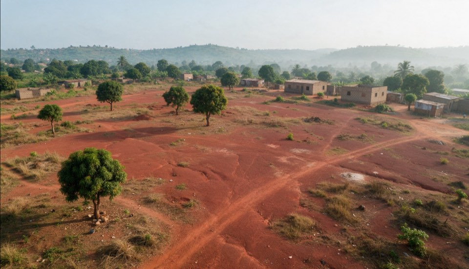
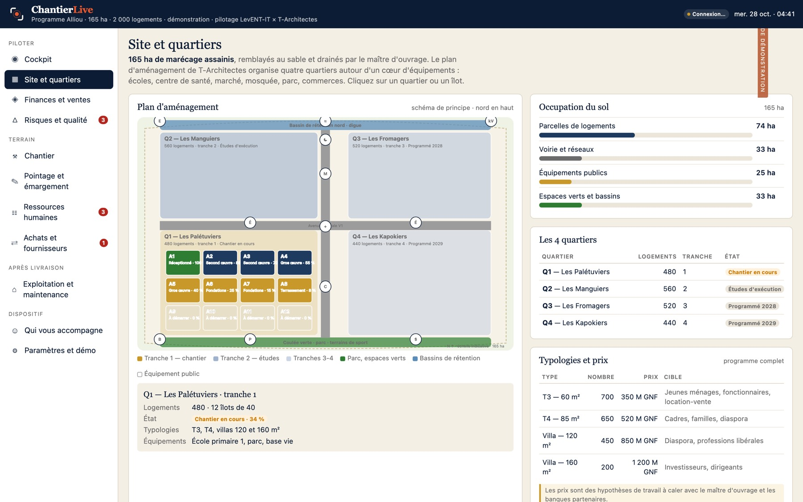
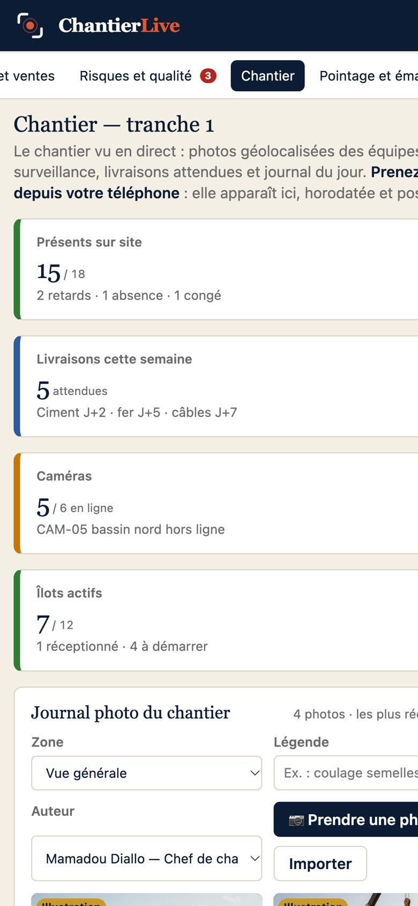

Cockpit du programme
Les six paramètres de réussite, les alertes triées par gravité, les phases et leur avancement. Simulez un aléa, voyez l'impact, appliquez le plan.
ChantierLive réunit sur un seul écran ce qui se passe réellement sur le terrain : présences signées et géolocalisées, photos horodatées, caméras, livraisons, coûts et délais. Six paramètres de réussite recalculés en continu, et des alertes avant qu'il ne soit trop tard.

Les retards se découvrent au rapport mensuel. Les présences se déclarent sur papier. Les photos restent dans des téléphones. Le promoteur apprend le dépassement quand il est déjà payé.

Les six paramètres de réussite, les alertes triées par gravité, les phases et leur avancement. Simulez un aléa, voyez l'impact, appliquez le plan.
Chaque agent signe sur le téléphone du chef d'équipe. Position GPS, distance au site, heure et appareil sont enregistrés. Impossible à antidater.
Journal photo géolocalisé, caméras de surveillance, livraisons attendues et journal du jour.
Le plan d'aménagement interactif : quartiers, îlots, voiries, équipements, avec l'état d'avancement de chaque îlot.
Budget engagé et dépensé par poste, trésorerie prévisionnelle, réservations et encaissements. La marge se lit en continu.
Matrice des risques, plans d'action, non-conformités avec photos et délais de levée.
Présences réelles par équipe, retards, absences, congés, paie calculée sur les émargements.
Commandes, délais de livraison, notation des fournisseurs, stocks critiques, règles d'achat.
Réceptions, remise des clés, gestion de quartier, tickets de maintenance, charges. Le programme continue de vivre après la dernière livraison.

Un programme réussit quand il tient ses délais, ses coûts, son périmètre, sa qualité, ses risques et ses bénéfices. ChantierLive les mesure sur les faits du terrain, pas sur les déclarations.
Le chef d'équipe ouvre ChantierLive sur son téléphone. Les agents signent, les photos partent, les livraisons sont pointées. Si le réseau tombe, tout est conservé et synchronisé au retour de la connexion.

Quarante-cinq minutes sur votre cas réel, en visio ou sur site. Vous repartez avec un bac à sable à votre nom.
Nous chargeons votre programme : phases, quartiers, budget, équipes, fournisseurs. Vous validez.
Les chefs d'équipe sont formés en une matinée. Les premiers émargements arrivent le jour même.
Vous suivez les six paramètres au quotidien. Nous restons disponibles par WhatsApp et par e-mail.
Tous les modules sont inclus. Le devis dépend du nombre de chantiers, de comptes utilisateurs, de la durée et de l'accompagnement souhaité. Vous payez par virement ou mobile money, sur facture ; nous ouvrons votre espace et vous remettons votre compte promoteur.
Quarante-cinq minutes sur votre programme réel, en visio ou sur site.
Chantiers, comptes, durée, formation, marque blanche : un prix clair, sous 48 heures.
Virement ou mobile money, sur facture. Sans carte bancaire ni prélèvement.
Votre espace est créé, vos équipes formées. Vous créez ensuite vos comptes vous-même.
Les paiements par virement en Europe sont encaissés par LevENT-IT (France) ; les paiements en mobile money et par virement en Afrique par ETS 2BY Consulting (Cameroun). La facture porte l'entité qui encaisse.
Un seul téléphone par équipe suffit : celui du chef d'équipe. Chaque agent y signe à l'arrivée et au départ. Un téléphone Android d'entrée de gamme convient.
ChantierLive fonctionne hors ligne. Les émargements et les photos sont conservés sur le téléphone et envoyés dès que la connexion revient, sans aucune action.
Vous décidez. Le promoteur voit tout. Le chef de chantier voit son chantier. Le chef d'équipe voit son équipe. L'architecte voit les plans et la qualité. Chaque accès est nominatif et journalisé.
Dans l'Union européenne, chez un hébergeur certifié, chiffrées en transit et au repos. Les licences dédiées peuvent choisir un autre hébergement, y compris sur vos propres serveurs.
Par virement bancaire ou par mobile money (Orange Money, MTN MoMo) sur les coordonnées indiquées sur la facture, en précisant votre référence. Votre espace est ouvert ou prolongé dès réception du paiement, et le reçu apparaît dans l'application.
ChantierLive affiche les caméras IP du chantier et signale celles qui passent hors ligne. Nous pouvons fournir et installer un kit de caméras solaires avec transmission 4G.
Quarante-cinq minutes, en visio ou sur site, sur votre programme réel. Sans engagement.